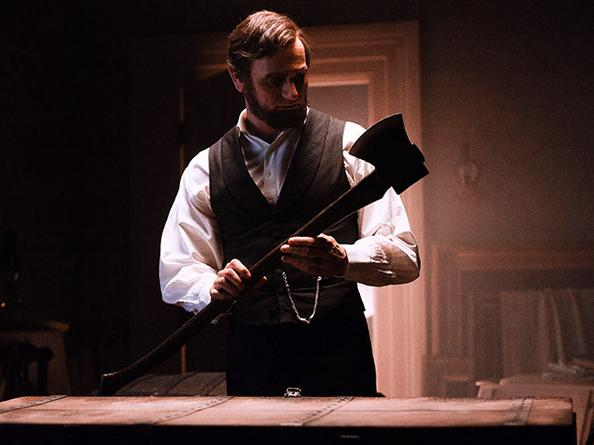
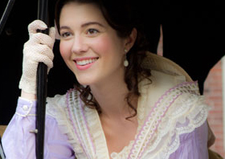

|
No one should expect historical accuracy out of Abraham Lincoln: Vampire Hunter.
After all, the movie, based on a 2010 book of the same title, decides that for Lincoln
saving the union wasn't good enough. Arguably the greatest president in American history
needs to defeat a nation of vampires to really draw in the box office crowds.
But is this movie just another harmless dose of over-the-top, history-on-steroids, gore
|

Abraham Lincoln (Benjamin Walker) examines his
axe in the White House
|
fest that comes with the summer movie season, or does it pose some serious harm to
Lincoln's legacy?
"Some of the underlying themes were rather disturbing," explains Vernon Burton, a
Clemson professor and author of The Age of Lincoln. The movie depicts the president
sending Americans into a "'leaders know best' war against vampires," as Burton describes
it.
According to Burton, who saw the film in its opening week, one of Lincoln's greatest
strengths was his ability to articulate what Americans were fighting for, especially as
the Civil War evolved from a conflict to preserve the union to a war to end slavery. He
says Lincoln would not want people to fight a war they didn't understand.
"Lincoln's philosophy is rule of law," said Burton. So to portray him as an ax-wielding
vigilante who slaughters vampires by night is "ironic," at the very least. "It's something
Lincoln would not like," he added.
In the film, a young Abraham Lincoln learns to hunt vampires to avenge his mother's
death before deciding to climb the political ladder. Once he makes it to the Oval Office,
Lincoln must reunite with his trusty battle ax, as the Confederate Army has made a deal
with the vampires. For, you see, in addition to being blood-sucking, ravenous, and
generally creepy (the movie isn't very creative in its interpretation of the vampire
myth), the monsters are also propagating the existence of slavery, as slaves make for the
perfect victims to feed their demonic bloodlust. Thus the Civil War becomes a battle not
just to defeat the rebel forces and to end slavery, but to save the nation from being
overrun by befanged ghouls.
The movie tries to use vampires as a symbol for the stranglehold slavery had on the
young democracy. "Slavery was our national sin," said Burton, who said the connection
works in that "the nation sucked the blood out of Africans for its wealth." However, in
posing vampires as the villains behind the crime of slavery, the film risks "letting the
|

Mary Todd Lincoln (Mary Elizabeth Winstead) in Abraham Lincoln:
Vampire Hunter
|
South and the United States off," freeing it from blame for the practice.
"The book did some clever things," said Burton. "I was excited to see the movie. The
book had potential." He said the film version was oversimplified, and he worried viewers
would make too much of what he and other historians often call the "Oliver Stone school of
history."
Burton saw one small redeeming aspect in the film in its positive portrayal of Mary
Todd Lincoln.
"She has had a bad rap," Burton explains. "Her and her husband were a partnership. He
really liked her and enjoyed her intellectually."
"The historical story of Lincoln is more interesting, intriguing, and bigger than the
mythical creation of a vampire hunter, and more important," said Burton. "Let's hope
people go to find the true history."
Source: Tierney Sneed in U.S> News & World Report (June 26, 2012).
|